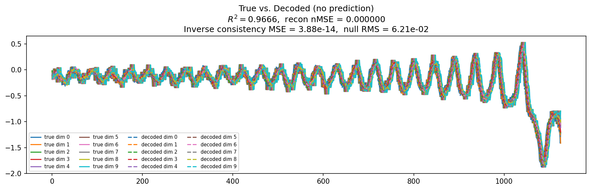
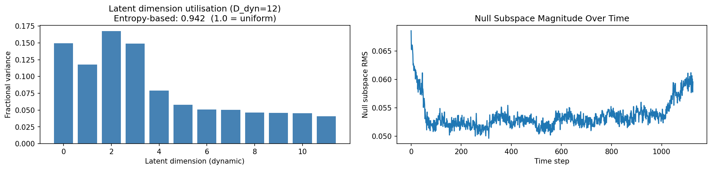
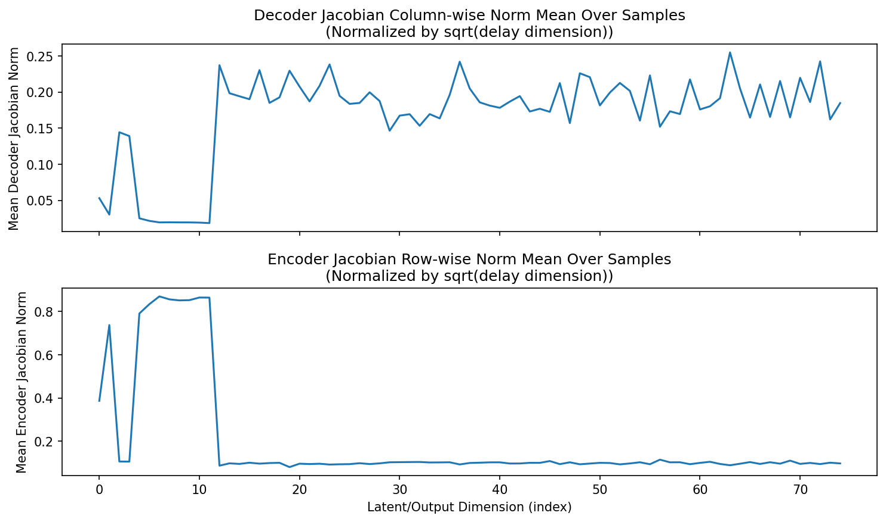
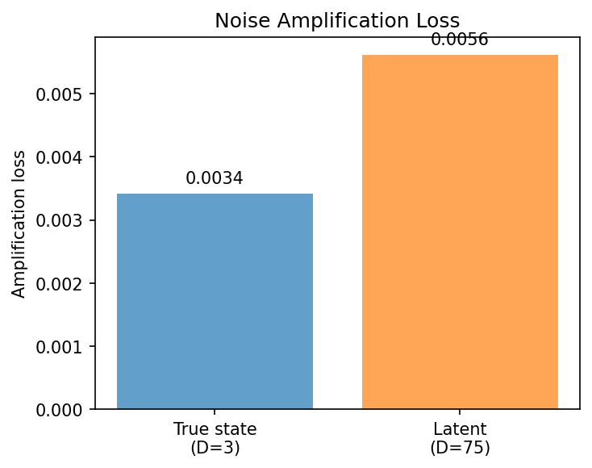
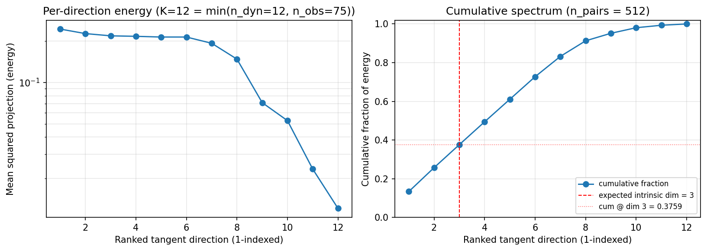
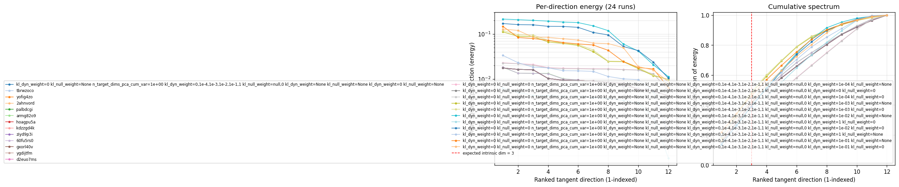

lorenz_partial_additive_encoderonly_nd75_init15_pcainit_autodim__kl_sweep_obsnoise005Project: Lorenz_INDpartial_NDInitSweep_autodim_D1_NormTrue__JacobianODE
Launched: 2026-04-22T19:50:43Z
Completed: 2026-04-22T20:20:16Z
Outcome: complete_clean
Git: latent-JacobianODE @ f909fc3
Expected runs: 12
lorenz_partial_additive_encoderonly_nd75_init15_pcainit_autodim__kl_sweep_obsnoise005Description
Lorenz partial additive coupling, obs_noise=0.05, n_delays=75. encoder_only_mode=true, init_pca_basis=true, use_vae=true. 12-run sweep: 6 kl_dyn_weight × 2 kl_null_weight. Best by val/recon_loss. Tangent-spectrum diagnostic post-training.
Hypothesis
At obs_noise=0.05 the encoder has to learn to denoise as well as reconstruct. KL shaping may matter more here than at noise=0.01: a mild kl_dyn should smooth the latent while kl_null suppresses the noise-dominated off-manifold variance. Expect best val/recon_loss at kl_dyn slightly higher than the obsnoise001 companion. Tangent spectrum should still concentrate on top 3 components — Lorenz intrinsic dim doesn't depend on noise level, only on the attractor.
Success criteria
Swept axes (9): model.kl_dyn_weight, model.kl_null_weight, model.n_target_dims_pca_cum_var, sweep_grid.model.kl_dyn_weight, sweep_grid.model.kl_null_weight, sweep_grid.training.lightning.kl_dyn_weight, sweep_grid.training.lightning.kl_null_weight, training.lightning.kl_dyn_weight, training.lightning.kl_null_weight
Chosen run (by best_traj_loss): a0o5cslr — traj_loss=0.00314, MASE=—, R²=—, LC loss=—, epoch=24.0
Swept-axis values at chosen run: model.kl_dyn_weight=0 · model.kl_null_weight=None · model.n_target_dims_pca_cum_var=0.990036 · sweep_grid.model.kl_dyn_weight=0,1e-4,1e-3,1e-2,1e-1,1 · sweep_grid.model.kl_null_weight=null,0 · sweep_grid.training.lightning.kl_dyn_weight=None · sweep_grid.training.lightning.kl_null_weight=None · training.lightning.kl_dyn_weight=0 · training.lightning.kl_null_weight=None
⚠️ 1 run_idx slot(s) had multiple matching wandb runs — the best by best_traj_loss was kept; the others are listed below for audit:
- run_idx=0: chose a0o5cslr, dropped tbrwzoco, yofig4zo, 2ahnvord, palbdcgi, armg82o9, hoagpu5a, kdzzgd4k, ziyd9p3i, 60fu5rs0, gxorl40v, ygdijtfm, d2euo7ms
Runs analyzed: 12 (expected 12)
| run_idx | run_id | model.kl_dyn_weight |
model.kl_null_weight |
model.n_target_dims_pca_cum_var |
sweep_grid.model.kl_dyn_weight |
sweep_grid.model.kl_null_weight |
sweep_grid.training.lightning.kl_dyn_weight |
sweep_grid.training.lightning.kl_null_weight |
training.lightning.kl_dyn_weight |
training.lightning.kl_null_weight |
best_traj_loss | best_MASE | R² | LC loss | epoch |
|---|---|---|---|---|---|---|---|---|---|---|---|---|---|---|---|
| 0 | a0o5cslr |
0 | None | 0.990036 | 0,1e-4,1e-3,1e-2,1e-1,1 | null,0 | None | None | 0 | None | 0.00314 | — | — | — | 24.0 |
| 1 | tmazrdv9 |
0 | 0 | 0.990036 | None | None | 0,1e-4,1e-3,1e-2,1e-1,1 | null,0 | 0 | 0 | 0.00314 | — | — | — | 24.0 |
| 2 | q0yn9a8w |
0 | 0 | 0.990036 | None | None | 0,1e-4,1e-3,1e-2,1e-1,1 | null,0 | 1.0e-04 | None | 0.00350 | — | — | — | 25.0 |
| 3 | 68qk05q7 |
0 | 0 | 0.990036 | None | None | 0,1e-4,1e-3,1e-2,1e-1,1 | null,0 | 1.0e-04 | 0 | 0.00351 | — | — | — | 24.0 |
| 5 | c1xrrj3c |
0 | 0 | 0.990036 | None | None | 0,1e-4,1e-3,1e-2,1e-1,1 | null,0 | 0.001 | 0 | 0.00519 | — | — | — | 25.0 |
| 4 | bdjktejl |
0 | 0 | 0.990036 | None | None | 0,1e-4,1e-3,1e-2,1e-1,1 | null,0 | 0.001 | None | 0.00522 | — | — | — | 24.0 |
| 6 | 6bmck00v |
0 | 0 | 0.990036 | None | None | 0,1e-4,1e-3,1e-2,1e-1,1 | null,0 | 0.01 | None | 0.01188 | — | — | — | 89.0 |
| 7 | 0fu8zdax |
0 | 0 | 0.990036 | None | None | 0,1e-4,1e-3,1e-2,1e-1,1 | null,0 | 0.01 | 0 | 0.01317 | — | — | — | 47.0 |
| 8 | c1qytci3 |
0 | 0 | 0.990036 | None | None | 0,1e-4,1e-3,1e-2,1e-1,1 | null,0 | 0.1 | None | 0.05187 | — | — | — | 71.0 |
| 9 | v6qepwrd |
0 | 0 | 0.990036 | None | None | 0,1e-4,1e-3,1e-2,1e-1,1 | null,0 | 0.1 | 0 | 0.05486 | — | — | — | 56.0 |
| 11 | ari6sskn |
0 | 0 | 0.990036 | None | None | 0,1e-4,1e-3,1e-2,1e-1,1 | null,0 | 1 | 0 | 0.19973 | — | — | — | 114.0 |
| 10 | 6w5v9nyb |
0 | 0 | 0.990036 | None | None | 0,1e-4,1e-3,1e-2,1e-1,1 | null,0 | 1 | None | 0.21264 | — | — | — | 113.0 |
| Criterion | Verdict | Note |
|---|---|---|
| All 12 runs train without divergence | Unknown | |
| Best val/recon_loss at some kl_dyn > 0 with clear margin over kl_dyn=0 | Unknown | |
| Top 3 components of tangent spectrum at best run carry >= 90% of energy | Unknown | |
| Best kl_dyn at noise=0.05 is >= best kl_dyn at noise=0.01 (more regularization helps at higher noise) | Unknown |
Automated verdicts use simple numeric-threshold parsing and may mis-classify qualitative criteria. The Discussion section below takes precedence.






(to be written)
run_analytics stdoutrun_analyticsNo run_id provided — selecting best run from group 'lorenz_partial_additive_encoderonly_nd75_init15_pcainit_autodim__kl_sweep_obsnoise005' ...
Found 24 total runs in JacobianODE/Lorenz_INDpartial_NDInitSweep_autodim_D1_NormTrue__JacobianODE (group=lorenz_partial_additive_encoderonly_nd75_init15_pcainit_autodim__kl_sweep_obsnoise005)
All runs (state, loop_closure_weight, tangent_entropy_weight, kl_dyn_weight):
a0o5cslr: state=finished, lc=0.0, te=0.0, kl_dyn=0.0
tbrwzoco: state=finished, lc=0.0, te=0.0, kl_dyn=0.0
yofig4zo: state=finished, lc=0.0, te=0.0, kl_dyn=0.0
2ahnvord: state=finished, lc=0.0, te=0.0, kl_dyn=0.0
palbdcgi: state=finished, lc=0.0, te=0.0, kl_dyn=0.0
armg82o9: state=finished, lc=0.0, te=0.0, kl_dyn=0.0
hoagpu5a: state=finished, lc=0.0, te=0.0, kl_dyn=0.0
kdzzgd4k: state=finished, lc=0.0, te=0.0, kl_dyn=0.0
ziyd9p3i: state=finished, lc=0.0, te=0.0, kl_dyn=0.0
60fu5rs0: state=finished, lc=0.0, te=0.0, kl_dyn=0.0
gxorl40v: state=finished, lc=0.0, te=0.0, kl_dyn=0.0
ygdijtfm: state=finished, lc=0.0, te=0.0, kl_dyn=0.0
d2euo7ms: state=finished, lc=0.0, te=0.0, kl_dyn=0.0
q0yn9a8w: state=finished, lc=0.0, te=0.0, kl_dyn=0.0001
tmazrdv9: state=finished, lc=0.0, te=0.0, kl_dyn=0.0
68qk05q7: state=finished, lc=0.0, te=0.0, kl_dyn=0.0001
bdjktejl: state=finished, lc=0.0, te=0.0, kl_dyn=0.001
c1xrrj3c: state=finished, lc=0.0, te=0.0, kl_dyn=0.001
6bmck00v: state=finished, lc=0.0, te=0.0, kl_dyn=0.01
ari6sskn: state=finished, lc=0.0, te=0.0, kl_dyn=1.0
0fu8zdax: state=finished, lc=0.0, te=0.0, kl_dyn=0.01
6w5v9nyb: state=finished, lc=0.0, te=0.0, kl_dyn=1.0
c1qytci3: state=finished, lc=0.0, te=0.0, kl_dyn=0.1
v6qepwrd: state=finished, lc=0.0, te=0.0, kl_dyn=0.1
slurm_timeout_min not found in any run config — falling back to 180 min
Including a0o5cslr (lc=0.0): use_all_runs=True (state=finished)
Including tbrwzoco (lc=0.0): use_all_runs=True (state=finished)
Including yofig4zo (lc=0.0): use_all_runs=True (state=finished)
Including 2ahnvord (lc=0.0): use_all_runs=True (state=finished)
Including palbdcgi (lc=0.0): use_all_runs=True (state=finished)
Including armg82o9 (lc=0.0): use_all_runs=True (state=finished)
Including hoagpu5a (lc=0.0): use_all_runs=True (state=finished)
Including kdzzgd4k (lc=0.0): use_all_runs=True (state=finished)
Including ziyd9p3i (lc=0.0): use_all_runs=True (state=finished)
Including 60fu5rs0 (lc=0.0): use_all_runs=True (state=finished)
Including gxorl40v (lc=0.0): use_all_runs=True (state=finished)
Including ygdijtfm (lc=0.0): use_all_runs=True (state=finished)
Including d2euo7ms (lc=0.0): use_all_runs=True (state=finished)
Including q0yn9a8w (lc=0.0): use_all_runs=True (state=finished)
Including tmazrdv9 (lc=0.0): use_all_runs=True (state=finished)
Including 68qk05q7 (lc=0.0): use_all_runs=True (state=finished)
Including bdjktejl (lc=0.0): use_all_runs=True (state=finished)
Including c1xrrj3c (lc=0.0): use_all_runs=True (state=finished)
Including 6bmck00v (lc=0.0): use_all_runs=True (state=finished)
Including ari6sskn (lc=0.0): use_all_runs=True (state=finished)
Including 0fu8zdax (lc=0.0): use_all_runs=True (state=finished)
Including 6w5v9nyb (lc=0.0): use_all_runs=True (state=finished)
Including c1qytci3 (lc=0.0): use_all_runs=True (state=finished)
Including v6qepwrd (lc=0.0): use_all_runs=True (state=finished)
Found 24 effectively-done sweep runs:
loop_closure_weight=0.0, tangent_entropy_weight=0.0, kl_dyn_weight=0.0 -> run_id=2ahnvord
loop_closure_weight=0.0, tangent_entropy_weight=0.0, kl_dyn_weight=0.0 -> run_id=60fu5rs0
loop_closure_weight=0.0, tangent_entropy_weight=0.0, kl_dyn_weight=0.0 -> run_id=a0o5cslr
loop_closure_weight=0.0, tangent_entropy_weight=0.0, kl_dyn_weight=0.0 -> run_id=armg82o9
loop_closure_weight=0.0, tangent_entropy_weight=0.0, kl_dyn_weight=0.0 -> run_id=d2euo7ms
loop_closure_weight=0.0, tangent_entropy_weight=0.0, kl_dyn_weight=0.0 -> run_id=gxorl40v
loop_closure_weight=0.0, tangent_entropy_weight=0.0, kl_dyn_weight=0.0 -> run_id=hoagpu5a
loop_closure_weight=0.0, tangent_entropy_weight=0.0, kl_dyn_weight=0.0 -> run_id=kdzzgd4k
loop_closure_weight=0.0, tangent_entropy_weight=0.0, kl_dyn_weight=0.0 -> run_id=palbdcgi
loop_closure_weight=0.0, tangent_entropy_weight=0.0, kl_dyn_weight=0.0 -> run_id=tbrwzoco
loop_closure_weight=0.0, tangent_entropy_weight=0.0, kl_dyn_weight=0.0 -> run_id=tmazrdv9
loop_closure_weight=0.0, tangent_entropy_weight=0.0, kl_dyn_weight=0.0 -> run_id=ygdijtfm
loop_closure_weight=0.0, tangent_entropy_weight=0.0, kl_dyn_weight=0.0 -> run_id=yofig4zo
loop_closure_weight=0.0, tangent_entropy_weight=0.0, kl_dyn_weight=0.0 -> run_id=ziyd9p3i
loop_closure_weight=0.0, tangent_entropy_weight=0.0, kl_dyn_weight=0.0001 -> run_id=68qk05q7
loop_closure_weight=0.0, tangent_entropy_weight=0.0, kl_dyn_weight=0.0001 -> run_id=q0yn9a8w
loop_closure_weight=0.0, tangent_entropy_weight=0.0, kl_dyn_weight=0.001 -> run_id=bdjktejl
loop_closure_weight=0.0, tangent_entropy_weight=0.0, kl_dyn_weight=0.001 -> run_id=c1xrrj3c
loop_closure_weight=0.0, tangent_entropy_weight=0.0, kl_dyn_weight=0.01 -> run_id=0fu8zdax
loop_closure_weight=0.0, tangent_entropy_weight=0.0, kl_dyn_weight=0.01 -> run_id=6bmck00v
loop_closure_weight=0.0, tangent_entropy_weight=0.0, kl_dyn_weight=0.1 -> run_id=c1qytci3
loop_closure_weight=0.0, tangent_entropy_weight=0.0, kl_dyn_weight=0.1 -> run_id=v6qepwrd
loop_closure_weight=0.0, tangent_entropy_weight=0.0, kl_dyn_weight=1.0 -> run_id=6w5v9nyb
loop_closure_weight=0.0, tangent_entropy_weight=0.0, kl_dyn_weight=1.0 -> run_id=ari6sskn
n_dims=75, n_latent=75, n_dyn=12, dt=0.0150
Loading run 2ahnvord (1/24)
Loading checkpoint epoch=24-step=5000.ckpt...
Computing diagnostics (100 batches)...
Cached to /orcd/data/ekmiller/001/eisenaj/JacobianODE/lightning/latent_jac_runs/diagnostics_cache/2ahnvord_n100.json
run=2ahnvord: DiagnosticMetrics(one_step_mase=0.7672097064208753, loop_closure_loss=0.03385983515530824, fast_eigenvalue_fraction=0.0, trajectory_val_loss=0.3836414629220963)
Loading run 60fu5rs0 (2/24)
Loading checkpoint epoch=24-step=5000.ckpt...
Computing diagnostics (100 batches)...
Cached to /orcd/data/ekmiller/001/eisenaj/JacobianODE/lightning/latent_jac_runs/diagnostics_cache/60fu5rs0_n100.json
run=60fu5rs0: DiagnosticMetrics(one_step_mase=0.7669941075307377, loop_closure_loss=0.02641880531795323, fast_eigenvalue_fraction=0.0, trajectory_val_loss=0.3878078496456146)
Loading run a0o5cslr (3/24)
Loading checkpoint epoch=24-step=5000.ckpt...
Computing diagnostics (100 batches)...
Cached to /orcd/data/ekmiller/001/eisenaj/JacobianODE/lightning/latent_jac_runs/diagnostics_cache/a0o5cslr_n100.json
run=a0o5cslr: DiagnosticMetrics(one_step_mase=0.7672097064208753, loop_closure_loss=0.03368444244377315, fast_eigenvalue_fraction=0.0, trajectory_val_loss=0.3836414629220963)
Loading run armg82o9 (4/24)
Loading checkpoint epoch=25-step=5200.ckpt...
Computing diagnostics (100 batches)...
Cached to /orcd/data/ekmiller/001/eisenaj/JacobianODE/lightning/latent_jac_runs/diagnostics_cache/armg82o9_n100.json
run=armg82o9: DiagnosticMetrics(one_step_mase=0.7670351525858073, loop_closure_loss=0.026048737904056908, fast_eigenvalue_fraction=0.0, trajectory_val_loss=0.3878690354526043)
Loading run d2euo7ms (5/24)
Loading checkpoint epoch=24-step=5000.ckpt...
Computing diagnostics (100 batches)...
Cached to /orcd/data/ekmiller/001/eisenaj/JacobianODE/lightning/latent_jac_runs/diagnostics_cache/d2euo7ms_n100.json
run=d2euo7ms: DiagnosticMetrics(one_step_mase=0.7672097064208753, loop_closure_loss=0.03368444244377315, fast_eigenvalue_fraction=0.0, trajectory_val_loss=0.3836414629220963)
Loading run gxorl40v (6/24)
Loading checkpoint epoch=24-step=5000.ckpt...
Computing diagnostics (100 batches)...
Cached to /orcd/data/ekmiller/001/eisenaj/JacobianODE/lightning/latent_jac_runs/diagnostics_cache/gxorl40v_n100.json
run=gxorl40v: DiagnosticMetrics(one_step_mase=0.7672097064208753, loop_closure_loss=0.03368444244377315, fast_eigenvalue_fraction=0.0, trajectory_val_loss=0.3836414629220963)
Loading run hoagpu5a (7/24)
Loading checkpoint epoch=24-step=5000.ckpt...
Computing diagnostics (100 batches)...
Cached to /orcd/data/ekmiller/001/eisenaj/JacobianODE/lightning/latent_jac_runs/diagnostics_cache/hoagpu5a_n100.json
run=hoagpu5a: DiagnosticMetrics(one_step_mase=0.7672097064208753, loop_closure_loss=0.03368444244377315, fast_eigenvalue_fraction=0.0, trajectory_val_loss=0.3836414629220963)
Loading run kdzzgd4k (8/24)
Loading checkpoint epoch=24-step=5000.ckpt...
Computing diagnostics (100 batches)...
Cached to /orcd/data/ekmiller/001/eisenaj/JacobianODE/lightning/latent_jac_runs/diagnostics_cache/kdzzgd4k_n100.json
run=kdzzgd4k: DiagnosticMetrics(one_step_mase=0.7672097064208753, loop_closure_loss=0.03368444244377315, fast_eigenvalue_fraction=0.0, trajectory_val_loss=0.3836414629220963)
Loading run palbdcgi (9/24)
Loading checkpoint epoch=24-step=5000.ckpt...
Computing diagnostics (100 batches)...
Cached to /orcd/data/ekmiller/001/eisenaj/JacobianODE/lightning/latent_jac_runs/diagnostics_cache/palbdcgi_n100.json
run=palbdcgi: DiagnosticMetrics(one_step_mase=0.7672097064208753, loop_closure_loss=0.03368444244377315, fast_eigenvalue_fraction=0.0, trajectory_val_loss=0.3836414629220963)
Loading run tbrwzoco (10/24)
Loading checkpoint epoch=24-step=5000.ckpt...
Computing diagnostics (100 batches)...
Cached to /orcd/data/ekmiller/001/eisenaj/JacobianODE/lightning/latent_jac_runs/diagnostics_cache/tbrwzoco_n100.json
run=tbrwzoco: DiagnosticMetrics(one_step_mase=0.7672097064208753, loop_closure_loss=0.03368444244377315, fast_eigenvalue_fraction=0.0, trajectory_val_loss=0.3836414629220963)
Loading run tmazrdv9 (11/24)
Loading checkpoint epoch=24-step=5000.ckpt...
Computing diagnostics (100 batches)...
Cached to /orcd/data/ekmiller/001/eisenaj/JacobianODE/lightning/latent_jac_runs/diagnostics_cache/tmazrdv9_n100.json
run=tmazrdv9: DiagnosticMetrics(one_step_mase=0.7672097064208753, loop_closure_loss=0.03368444244377315, fast_eigenvalue_fraction=0.0, trajectory_val_loss=0.3836414629220963)
Loading run ygdijtfm (12/24)
Loading checkpoint epoch=24-step=5000.ckpt...
Computing diagnostics (100 batches)...
Cached to /orcd/data/ekmiller/001/eisenaj/JacobianODE/lightning/latent_jac_runs/diagnostics_cache/ygdijtfm_n100.json
run=ygdijtfm: DiagnosticMetrics(one_step_mase=0.7672097064208753, loop_closure_loss=0.03368444244377315, fast_eigenvalue_fraction=0.0, trajectory_val_loss=0.3836414629220963)
Loading run yofig4zo (13/24)
Loading checkpoint epoch=24-step=5000.ckpt...
Computing diagnostics (100 batches)...
Cached to /orcd/data/ekmiller/001/eisenaj/JacobianODE/lightning/latent_jac_runs/diagnostics_cache/yofig4zo_n100.json
run=yofig4zo: DiagnosticMetrics(one_step_mase=0.7672097064208753, loop_closure_loss=0.03368444244377315, fast_eigenvalue_fraction=0.0, trajectory_val_loss=0.3836414629220963)
Loading run ziyd9p3i (14/24)
Loading checkpoint epoch=24-step=5000.ckpt...
Computing diagnostics (100 batches)...
Cached to /orcd/data/ekmiller/001/eisenaj/JacobianODE/lightning/latent_jac_runs/diagnostics_cache/ziyd9p3i_n100.json
run=ziyd9p3i: DiagnosticMetrics(one_step_mase=0.7672097064208753, loop_closure_loss=0.03368444244377315, fast_eigenvalue_fraction=0.0, trajectory_val_loss=0.3836414629220963)
Loading run 68qk05q7 (15/24)
Loading checkpoint epoch=24-step=5000.ckpt...
Computing diagnostics (100 batches)...
Cached to /orcd/data/ekmiller/001/eisenaj/JacobianODE/lightning/latent_jac_runs/diagnostics_cache/68qk05q7_n100.json
run=68qk05q7: DiagnosticMetrics(one_step_mase=0.7705002141293854, loop_closure_loss=0.0011820027601788753, fast_eigenvalue_fraction=0.0, trajectory_val_loss=0.39444679766893387)
Loading run q0yn9a8w (16/24)
Loading checkpoint epoch=25-step=5200.ckpt...
Computing diagnostics (100 batches)...
Cached to /orcd/data/ekmiller/001/eisenaj/JacobianODE/lightning/latent_jac_runs/diagnostics_cache/q0yn9a8w_n100.json
run=q0yn9a8w: DiagnosticMetrics(one_step_mase=0.7705734317484263, loop_closure_loss=0.0011597621283726766, fast_eigenvalue_fraction=0.0, trajectory_val_loss=0.3942799569666386)
Loading run bdjktejl (17/24)
Loading checkpoint epoch=24-step=5000.ckpt...
Computing diagnostics (100 batches)...
Cached to /orcd/data/ekmiller/001/eisenaj/JacobianODE/lightning/latent_jac_runs/diagnostics_cache/bdjktejl_n100.json
run=bdjktejl: DiagnosticMetrics(one_step_mase=0.7869361034685665, loop_closure_loss=0.000621081905264873, fast_eigenvalue_fraction=0.0, trajectory_val_loss=0.42333309203386305)
Loading run c1xrrj3c (18/24)
Loading checkpoint epoch=25-step=5200.ckpt...
Computing diagnostics (100 batches)...
Cached to /orcd/data/ekmiller/001/eisenaj/JacobianODE/lightning/latent_jac_runs/diagnostics_cache/c1xrrj3c_n100.json
run=c1xrrj3c: DiagnosticMetrics(one_step_mase=0.7858253367301122, loop_closure_loss=0.0006252461933763698, fast_eigenvalue_fraction=0.0, trajectory_val_loss=0.42359070777893065)
Loading run 0fu8zdax (19/24)
Loading checkpoint epoch=47-step=9600.ckpt...
Computing diagnostics (100 batches)...
Cached to /orcd/data/ekmiller/001/eisenaj/JacobianODE/lightning/latent_jac_runs/diagnostics_cache/0fu8zdax_n100.json
run=0fu8zdax: DiagnosticMetrics(one_step_mase=0.8137903059395514, loop_closure_loss=0.000341723753081169, fast_eigenvalue_fraction=0.0, trajectory_val_loss=0.3965854725241661)
Loading run 6bmck00v (20/24)
Loading checkpoint epoch=89-step=18000.ckpt...
Computing diagnostics (100 batches)...
Cached to /orcd/data/ekmiller/001/eisenaj/JacobianODE/lightning/latent_jac_runs/diagnostics_cache/6bmck00v_n100.json
run=6bmck00v: DiagnosticMetrics(one_step_mase=0.8171682043420632, loop_closure_loss=0.00032316096447175367, fast_eigenvalue_fraction=0.0, trajectory_val_loss=0.3764262866973877)
Loading run c1qytci3 (21/24)
Loading checkpoint epoch=71-step=14400.ckpt...
Computing diagnostics (100 batches)...
Cached to /orcd/data/ekmiller/001/eisenaj/JacobianODE/lightning/latent_jac_runs/diagnostics_cache/c1qytci3_n100.json
run=c1qytci3: DiagnosticMetrics(one_step_mase=1.0028897802511145, loop_closure_loss=0.00012197984382510185, fast_eigenvalue_fraction=0.0, trajectory_val_loss=0.2381294558942318)
Loading run v6qepwrd (22/24)
Loading checkpoint epoch=56-step=11400.ckpt...
Computing diagnostics (100 batches)...
Cached to /orcd/data/ekmiller/001/eisenaj/JacobianODE/lightning/latent_jac_runs/diagnostics_cache/v6qepwrd_n100.json
run=v6qepwrd: DiagnosticMetrics(one_step_mase=1.0255204939838958, loop_closure_loss=0.00012940920685650781, fast_eigenvalue_fraction=0.0, trajectory_val_loss=0.29257618248462675)
Loading run 6w5v9nyb (23/24)
Loading checkpoint epoch=113-step=22800.ckpt...
Computing diagnostics (100 batches)...
Cached to /orcd/data/ekmiller/001/eisenaj/JacobianODE/lightning/latent_jac_runs/diagnostics_cache/6w5v9nyb_n100.json
run=6w5v9nyb: DiagnosticMetrics(one_step_mase=2.2087165697538067, loop_closure_loss=4.574248830522265e-06, fast_eigenvalue_fraction=0.0, trajectory_val_loss=0.05413219755515456)
Loading run ari6sskn (24/24)
Loading checkpoint epoch=114-step=23000.ckpt...
Computing diagnostics (100 batches)...
Cached to /orcd/data/ekmiller/001/eisenaj/JacobianODE/lightning/latent_jac_runs/diagnostics_cache/ari6sskn_n100.json
run=ari6sskn: DiagnosticMetrics(one_step_mase=2.2163343432975773, loop_closure_loss=2.2103721784105803e-06, fast_eigenvalue_fraction=0.0, trajectory_val_loss=0.0543174909427762)
Ranking method: best_traj_loss
Best run ID: 6bmck00v
Best loop_closure_weight: 0.0
Best tangent_entropy_weight: 0.0
Best kl_dyn_weight: 0.01
Best traj loss: 0.376426
Criteria applied: ['C1', 'C2', 'C3']
Surviving: 20 / 24
Auto-selected run_id: 6bmck00v
======================================================================
PARETO FRONTIER RUNS (2 runs)
======================================================================
Run ID LC Loss Traj Val Loss
------------ -------------- --------------
ari6sskn 0.000002 0.054317
6w5v9nyb 0.000005 0.054132
======================================================================
RANKING METHOD COMPARISON (over 20 survivors)
======================================================================
Method Run ID LC Loss Traj Val Loss
---------------------- ------------ -------------- --------------
best_traj_loss 6bmck00v 0.000323 0.376426 <-- active
pareto_knee 6bmck00v 0.000323 0.376426
geo_rank 6bmck00v 0.000323 0.376426
minimax_rank 6bmck00v 0.000323 0.376426
geo_log_score 6bmck00v 0.000323 0.376426
minimax_log_score 6bmck00v 0.000323 0.376426
======================================================================
Loading run 6bmck00v from JacobianODE/Lorenz_INDpartial_NDInitSweep_autodim_D1_NormTrue__JacobianODE ...
Train dataset shape: torch.Size([23782, 45, 75])
Validation dataset shape: torch.Size([7567, 45, 75])
Test dataset shape: torch.Size([3243, 45, 75])
Train trajectories dataset shape: torch.Size([22, 1126, 75])
Validation trajectories dataset shape: torch.Size([7, 1126, 75])
Test trajectories dataset shape: torch.Size([3, 1126, 75])
Loading checkpoint epoch=89-step=18000.ckpt...
encoder_only_mode=True → skipping dynamics-only sections: ['kaplan_yorke', 'long_trajectory', 'lyapunov', 'mase', 'prediction_detail', 'prediction_windows', 'sweep_overview']
Computing reconstruction ...
Computing latent utilization ...
Entropy-based utilization: 0.942
Null subspace mean RMS: 5.366792e-02
Computing encoder/decoder Jacobians ...
encoder_jacobian: (128, 75, 75)
decoder_jacobian: (128, 75, 75)
Computing amplification loss ...
Amplification loss — True state: 0.003419
Amplification loss — Latent: 0.005620
Computing tangent space spectrum ...